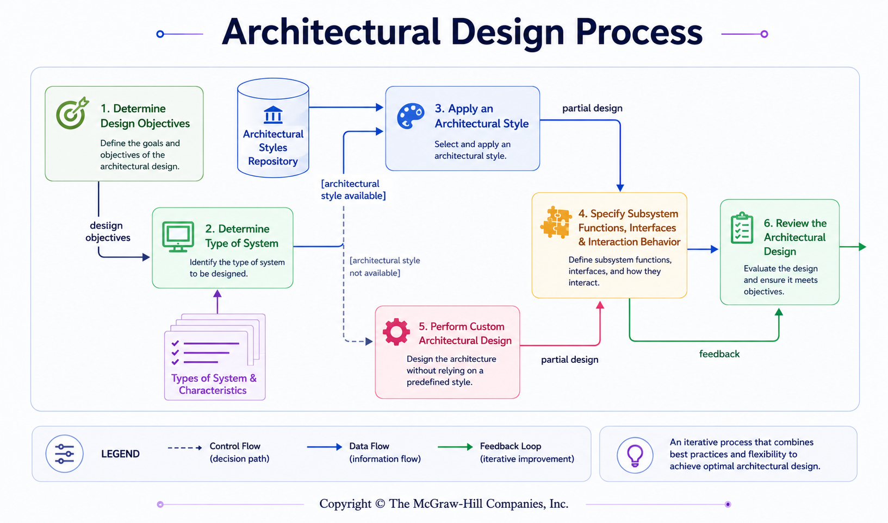

Architectural Design Process
Architecture is a decision process: start with objectives, understand the system type, select or adapt a style, specify responsibilities and interfaces, then review and iterate.
Follow the source architectural-design process and justify decisions using change, COTS, performance, reliability, security, fault tolerance and recovery considerations.
Five moves — then repeat if needed
Derive priorities such as security, performance, safety or fault tolerance.
Classify the dominant behavior of the system or subsystem.
Adapt an architectural style when suitable; otherwise design deliberately.
Functions, interfaces and interaction behavior of subsystems/components.
Check requirements, objectives, principles, security and constraints.

What should influence the decision?
How easily must the system evolve without widespread redesign?
Can commercial off-the-shelf parts reduce effort or impose constraints?
Real-time processing? High transaction volume? Expensive computation?
How consistently must intended functions work under assumed conditions?
How strongly must data and program resources be protected?
Must operation continue after software problems occur?
How should the system return to a previous state after a crash?
Architecture choices should remain traceable to the requirements that created them.
Custom architecture is allowed — but not arbitrary
✕ Weak custom design
“No style fits, so we draw whatever structure feels convenient.”
✓ Disciplined custom design
Use useful partial structures and design patterns, allocate requirements/objectives, specify interfaces and interactions, then review the result.
Mini decision lab
| Scenario clue | Architectural concern |
|---|---|
| Millions of transactions | Performance and capacity become strong design objectives. |
| Must continue during component failure | Fault tolerance and recovery become architectural drivers. |
| Sensitive personal data | Security boundaries and protected interfaces matter early. |
| Rapid business change expected | Ease of change, separation and stable interfaces matter more. |
Do not choose a style first and invent a justification later. Objectives and system characteristics should drive the choice.